逐秒帧附录 · 玩法架构证据图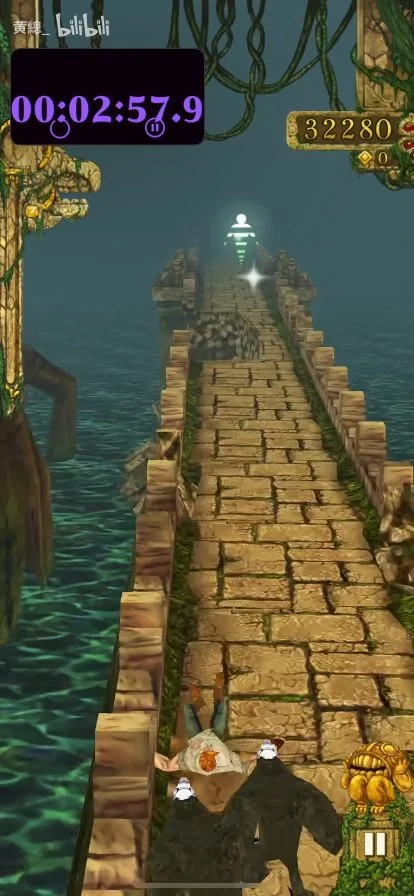
180s · 石桥
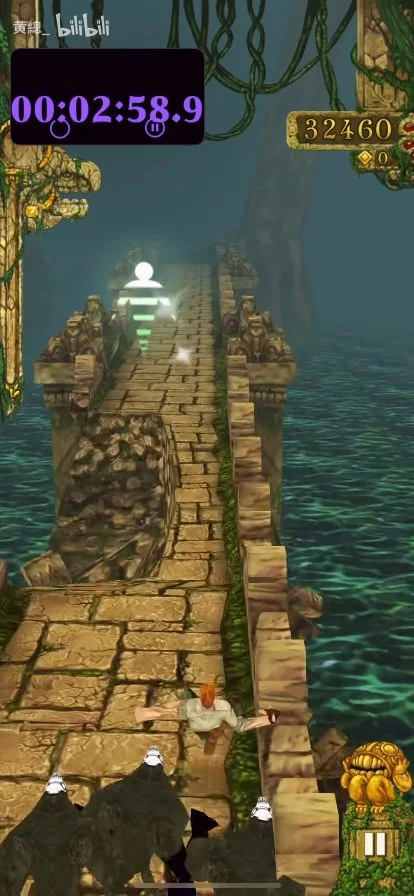
181s · 石桥
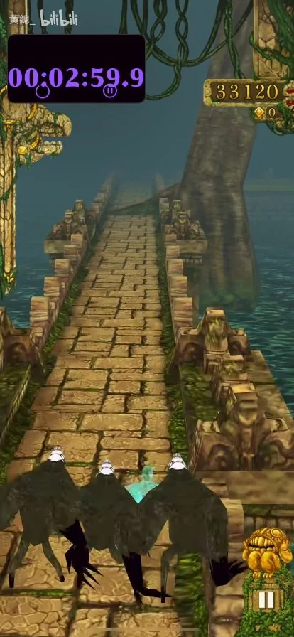
182s · 石桥
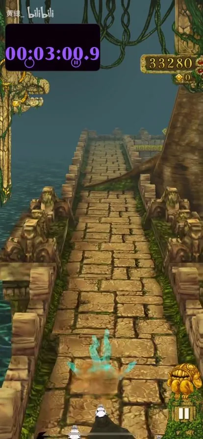
183s · 石桥
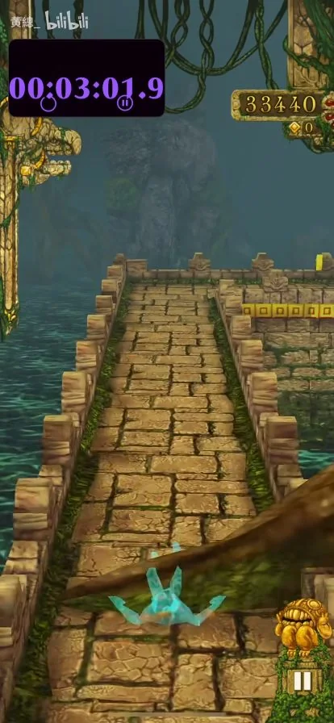
184s · 石桥
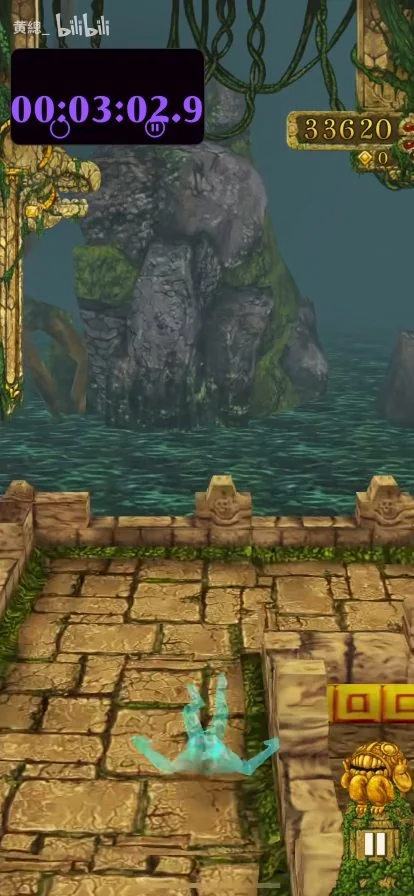
185s · 石桥
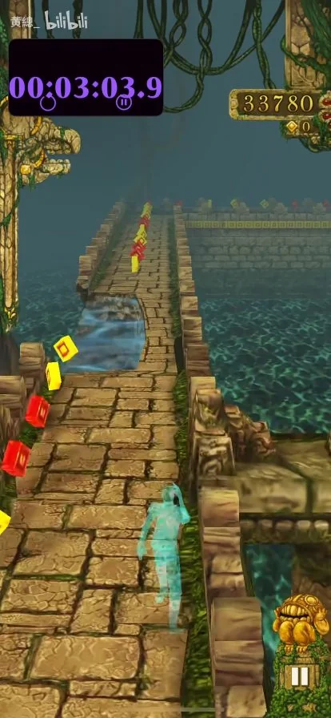
186s · 石桥
金币开始混有红色，沿道路成串排列。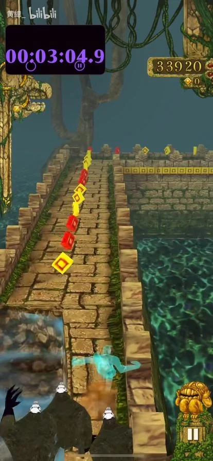
187s · 石桥
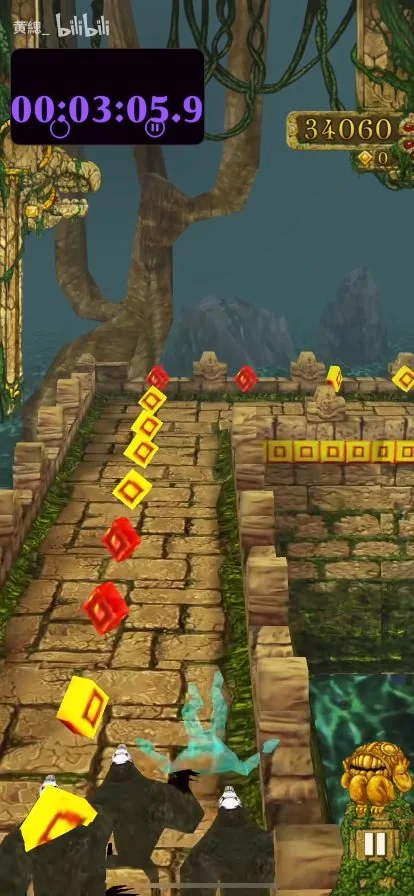
188s · 石桥
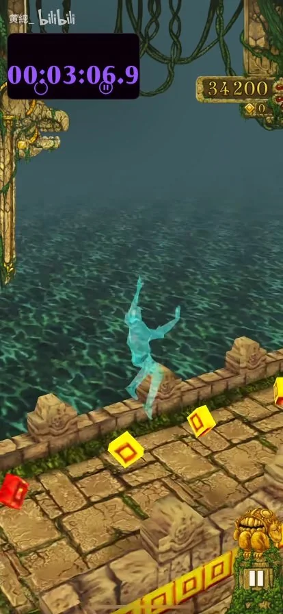
189s · 石桥
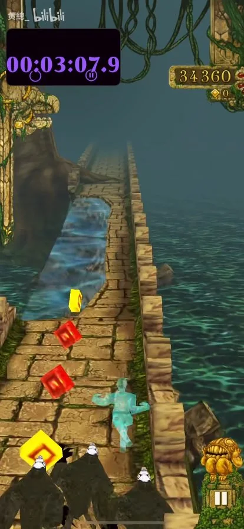
190s · 石桥
长条蓝色缺口与剩余石沿。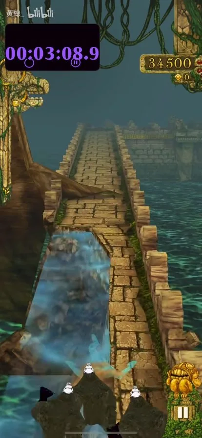
191s · 石桥
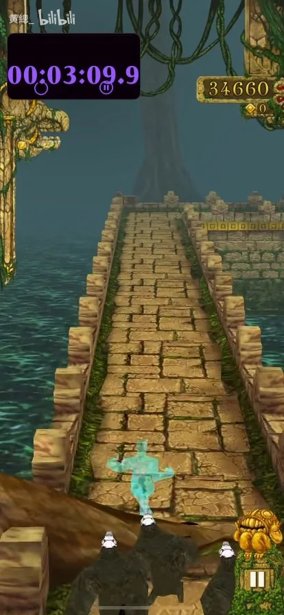
192s · 石桥
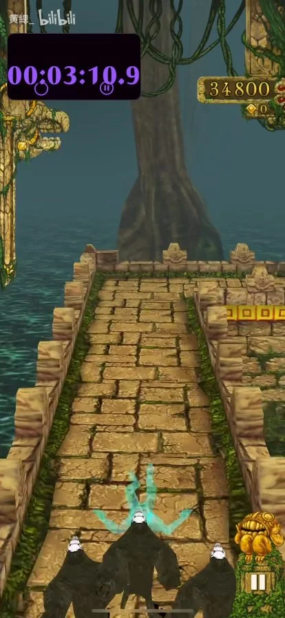
193s · 石桥
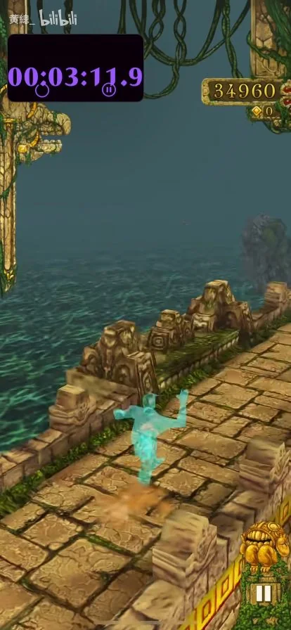
194s · 石桥
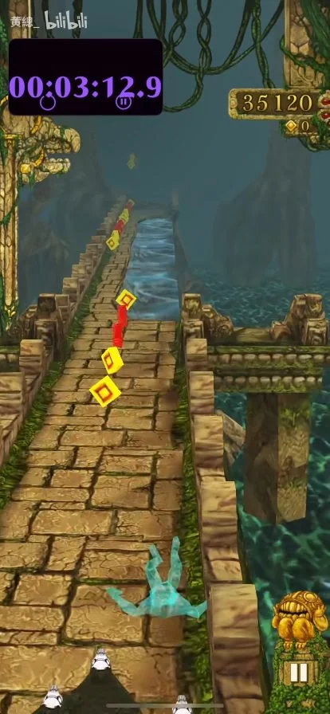
195s · 石桥
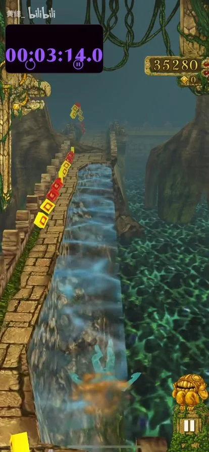
196s · 石桥
一侧保留石沿，另一侧出现长条蓝色缺口。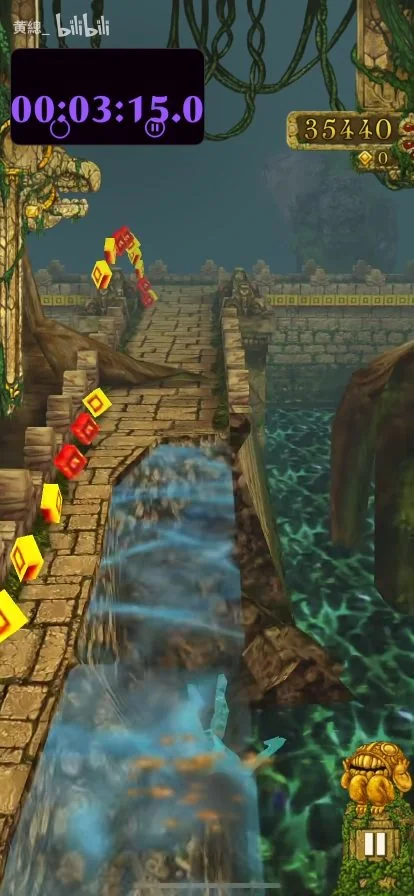
197s · 石桥